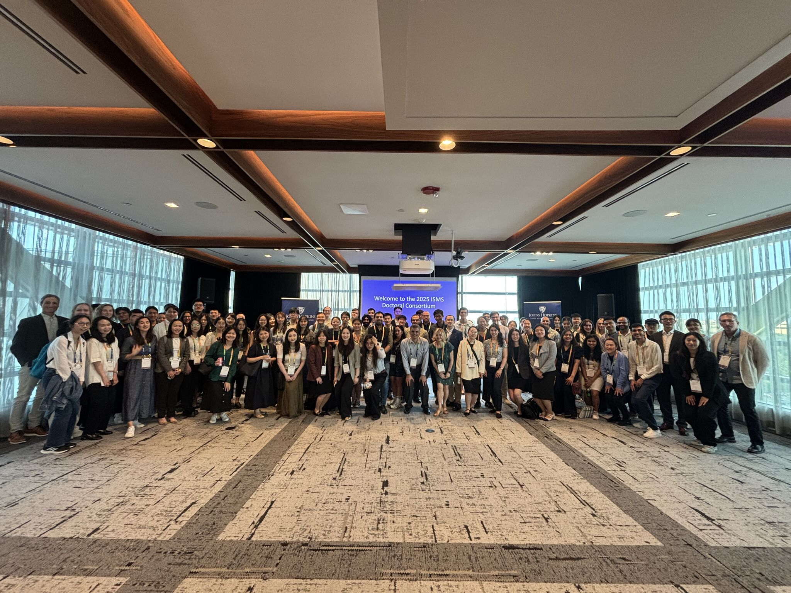
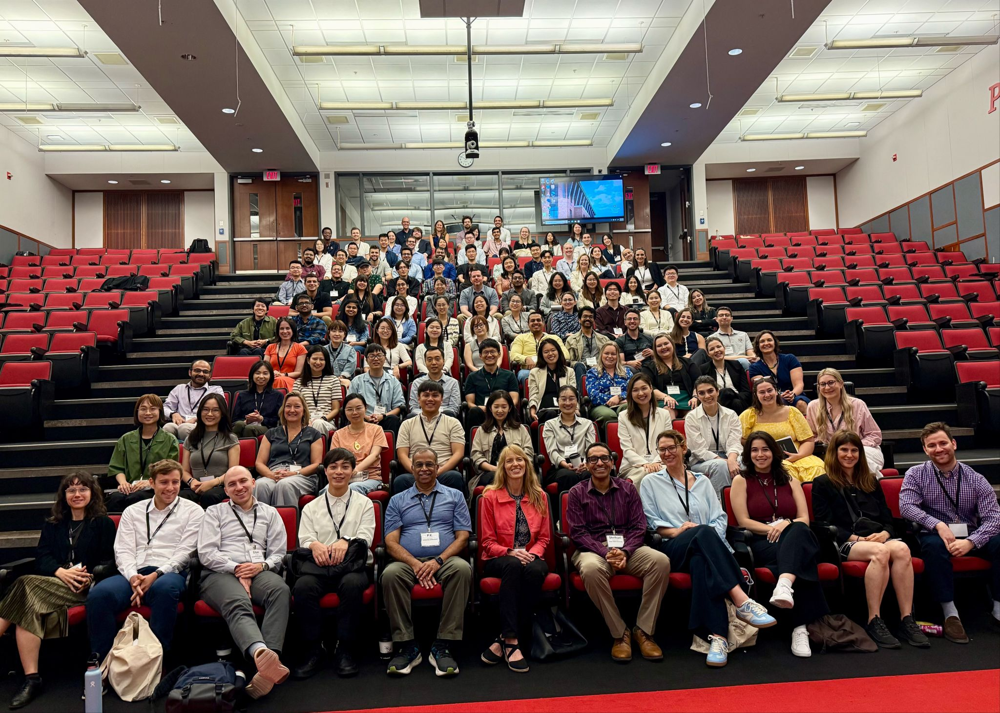
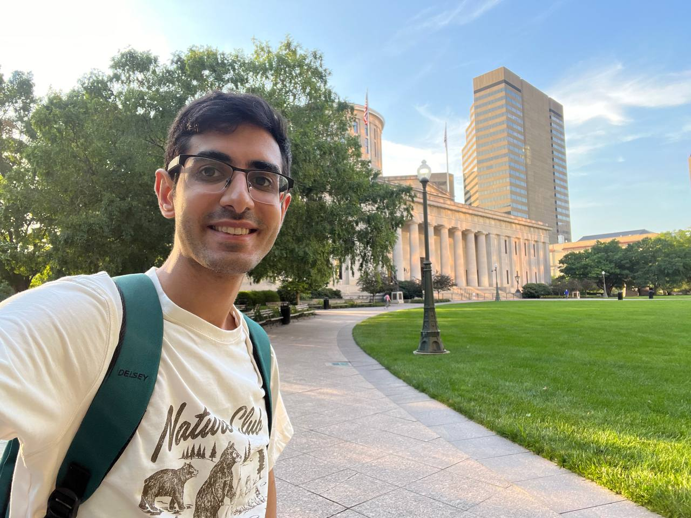
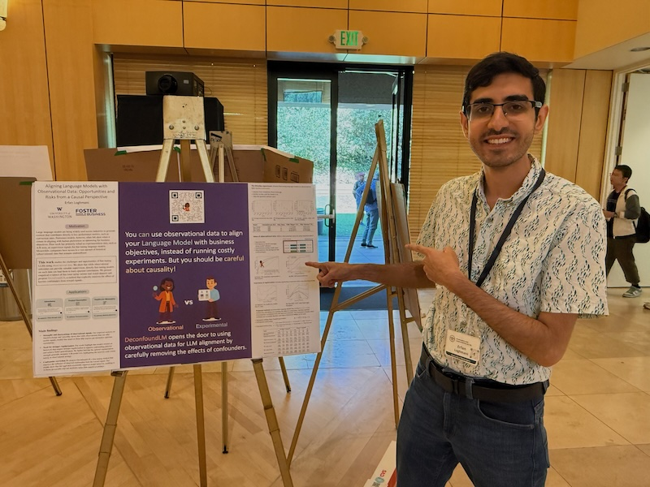
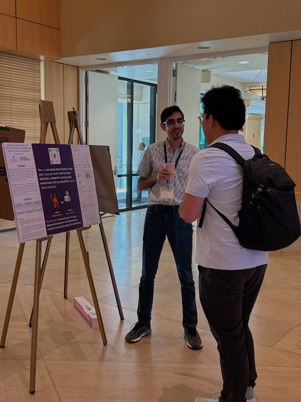

This summer started with three memorable experiences that gave me the chance to connect with new people and friends while gaining perspectives to guide my academic path. What a start, and now I’m back to work, enjoying the best time of year in Seattle. 🌞 🌊
It started in Washington, D.C. with the ISMS Doctoral Consortium and the Marketing Science Conference. The consortium was a wonderful opportunity to meet other doctoral students at a similar stage and learn from excellent sessions. A key takeaway from the job market session, shared by Runshan Fu, was the importance of focusing on what you can control rather than worrying about what you can’t. I also found the transition-to-faculty session valuable, offering genuine perspectives on navigating the challenging early years as a faculty. Huge thanks to Nitin Mehta and all faculty and organizers for such a thoughtful event. The Marketing Science Conference was equally exciting. My last one (in 2022) was virtual, so attending in person this year and experiencing the energy, ideas, and conversations firsthand was truly inspiring.

My next trip took me to The Ohio State University Fisher College of Business for the 2025 AMA-Sheth Doctoral Consortium, where I was honored to be selected as a fellow. It was four days of learning, fun, and connection with amazing peers and faculty. The session on Staying Curious Over a Lifetime of Research was fantastic, and the stories shared by faculty combined with the interactive structure of the session made it an inspiring experience. Another highlight for me was the small group session, where I received excellent feedback from Beth Fossen, Ryan Dew, Anocha Aribarg, and Rick Staelin, not only on my research but also on how to present it effectively. A big thank you to the organizers Rebecca Walker Reczek, Greg Allenby, Grant Donnelly, Alice Li, and, Selin Malkoc, for an unforgettable experience. I’m also grateful to Chengzhao Tu (Max) for being so friendly and kind and for making sure we saw the best of the city on our last day.


Rounding out my early summer travels was the ACM Conference on Economics and Computation (EC’25) at Stanford University, where I presented my paper, "Aligning Language Models with Observational Data: Opportunities and Risks from a Causal Perspective", as a poster. The feedback I received was incredibly helpful, and it was fascinating to connect with the EC community and see so many great ideas at the intersection of economics and computer science.


These experiences have given me inspiration and excitement for what lies ahead. You can find the paper I presented at deconfoundlm.github.io I’d be happy to chat and discuss, so please feel free to reach out with any questions or feedback.